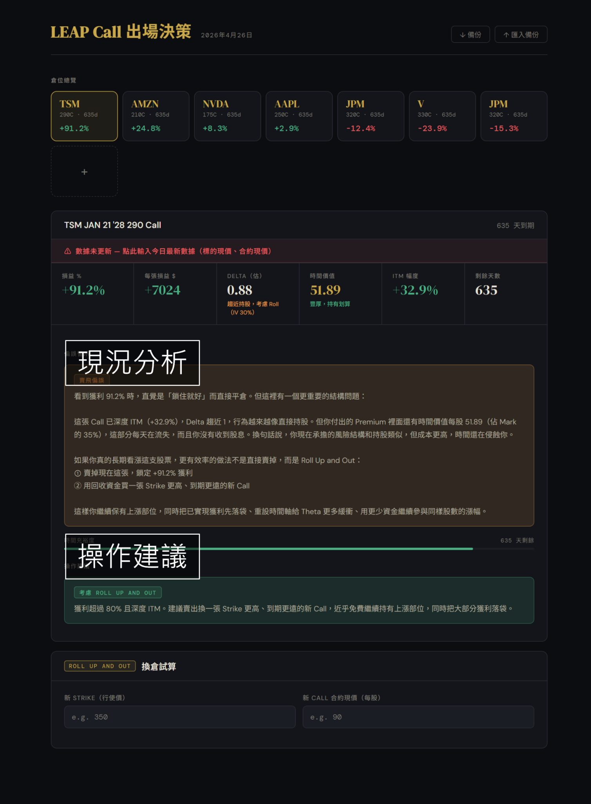

投資理財
LEAP Call出場工具
有在做 leap call 的人應該遇過這個困擾，就是這筆賺錢的單到底什麼時候該撤 (當然不是每個人都這樣，就算是給同樣困擾的人看的吧)。
選擇權這玩意兒跟現股完全不同。現股抱著好公司就算不小心錯過高點，大不了多等幾年，總有彈回來的時候。但 LEAP call 有時間壓力，越靠近到期日的紅字 (美股)，每一天都在割心。
很多人會建議說，覺得差不多就可以出場了。這話聽起來很有道理，但我覺得有說和沒說差不多。就像我之前台積電，賺 1000 的時候覺得差不多，賺 2000 的時候也覺得差不多，到底什麼時候才是那個對的差不多？
還有其他的出場法，如：
- 壓力線出場法：但！有時等著等著人家就突破一飛沖天了啊！
- 時間出場法：但！有時候運氣好到剛買沒多久就大賺，這時真的還要等個半年一年嗎？
特別是回顧了自己的交易紀錄，發現最常遇到這三種想哭的狀況，這也是我決定把判斷邏輯寫進工具的原因，不再依賴大腦。
- 小賺就急著逃跑：像之前的台積電，如果不是有意識地持有，我可能賺 2000 就心滿意足地跑了，完全與後面的大行情無緣。
- 太早認輸停損：之前持有的 Costco 帳面虧損一度達到 50% 。在離到期還有快一年的時候，因為看不出盤整的盡頭，手癢按了停損。結果才過一個月它就開始大漲，如果我多等一下，原本是能賺錢的。
- 情緒帶領：ANET 是另一個代表作。被套牢好久後終於看到帳面翻正，想說快到期了(其實還有一年)，只賺了 600 就想著趕快解套。沒想到賣完之後直接噴發。
這些經驗讓我體會到，我需要一個SOP來幫我！
為了不要再讓情緒和感覺決定進出，我把自己的出場邏輯、常遇到的問題，和AI討論出了一套比較穩健的策略提醒。完全針對我的風險控管和資金狀況量身打造，把上面提到的遺憾轉化成了客觀的判斷指標。幫助自己在關鍵時刻冷靜，克服想亂按滑鼠解決問題的衝動。
在打造了一個個人化的出場策略判斷工具之後，曾經讓我糾結到睡不著的那些問題，現在打開來看一眼就有答案了，揮別以前那個靠感覺亂按的自己。

留言
這裡之後會接上第三方留言服務（如 Disqus / utterances / Giscus）。
讀者可以留言、回覆，資料由留言服務代管。